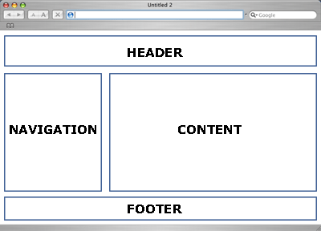
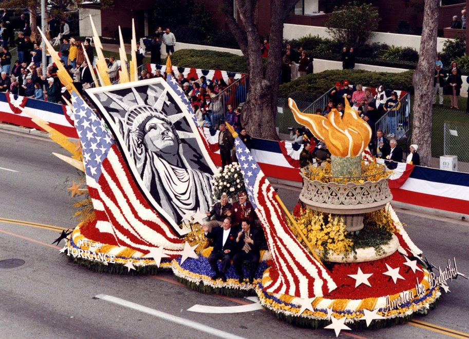
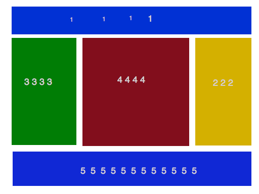

Styling With CSS
Intermediate
Ryan Wagner
Layouts? What that?
Layout is the art of arranging content on a page for aesthetic and functional reasons.
A Simple Layout

Warm Up!
To get rolling, create Four Divs with the ID's header, navigation, content, and footer.
Then put a paragraph in each that identifies the div.
How do we accomplish this?
Layouts are accomplished through the magic of four properties: Width, Height, Display, and Float.
Width and Height
The width property controls exactly what it sounds like. It controls the width of an item.
This can be calculated in several ways, but usually is calculated in percents or pixels.
Height functions similarly to width, but can't use percentages.
Next step!
Using the HTML you already wrote:
- Create a CSS sheet as you learned how in the last class.
- Set the background colors on each element to a different color. Your choice!
- Set the height on each to 200px (
height: 200px;)
- Set the width on the header to 100% (
width: 100%;), navigation to 33%, content to 67%, and footer to 100%.
- Reload the page!
Display
Display has five major parameters that can be passed to it.
These are inline, block, inline-block, list-item, table, and various iterations thereof.
Not This Kind of Float

Float
Floats are a truly fascinating property that has the unique ability to make both complex layouts and creative swearing possible.
Next Step
Using the HTML you already wrote:
- Float the navigation block left.
- Experiment with floating the content block left or right. What, if anything, changed? Why?
- Now float the navigation block right, and experiment with floating the content block left and right.
Unguided Practice
Create the image below using what you know. The number in the block corresponds to what order it should be placed in, in the HTML.

Thank you for coming and for your service!